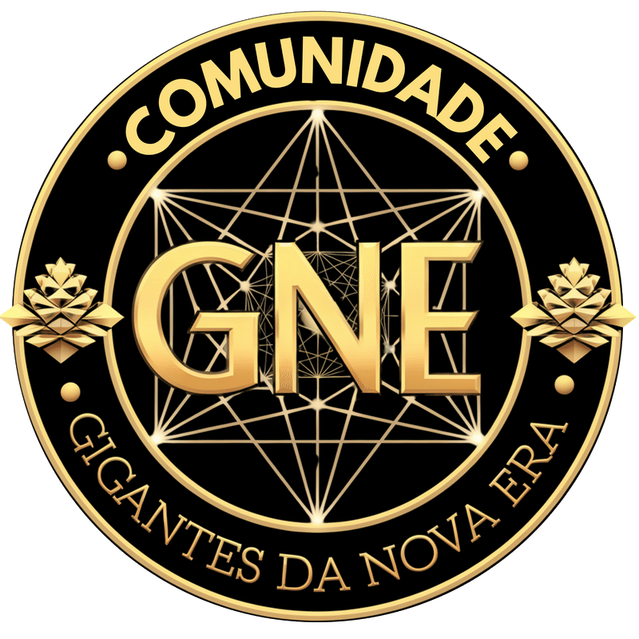
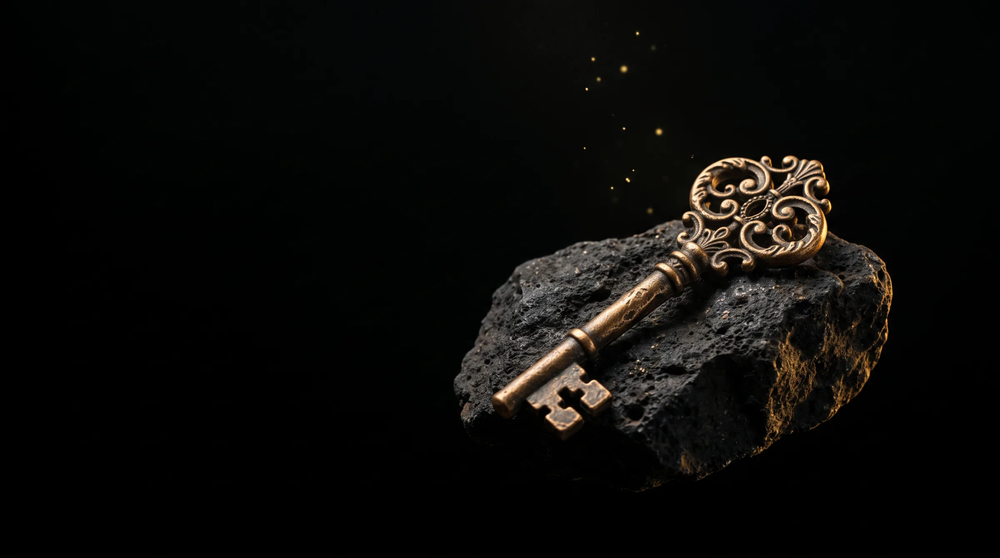
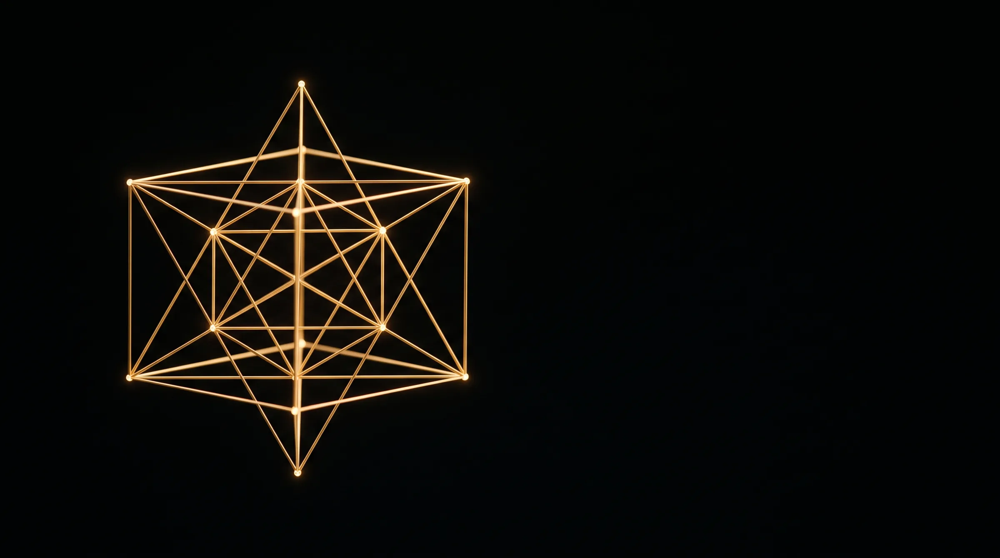
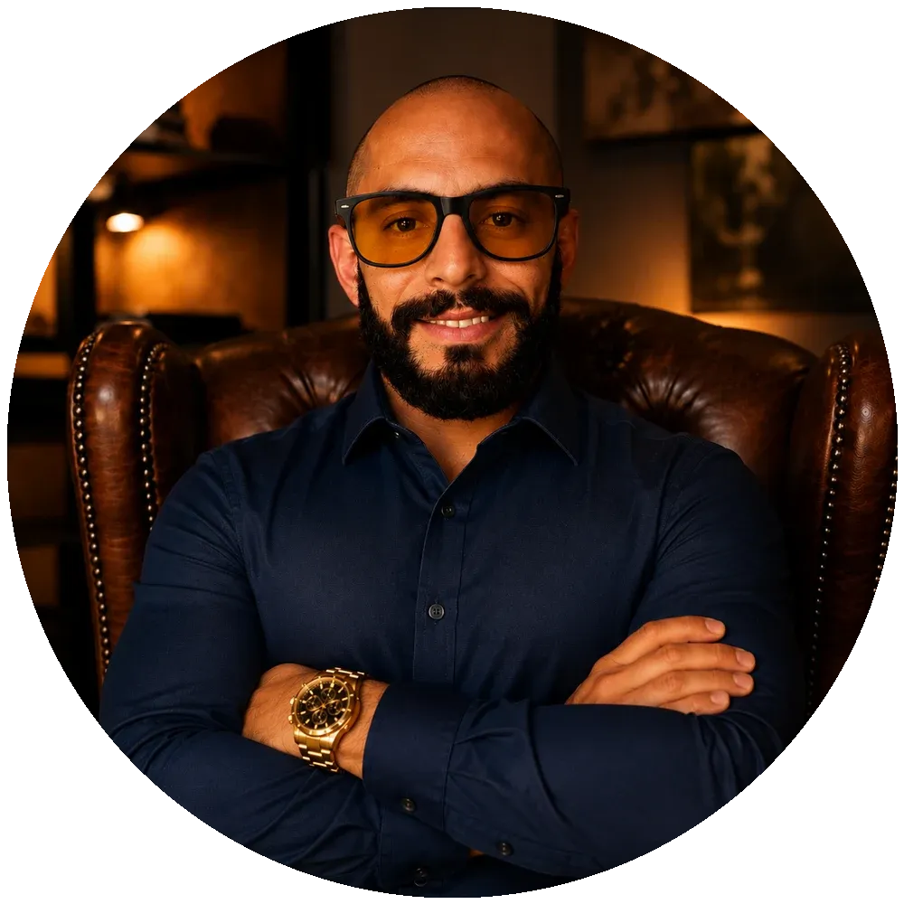
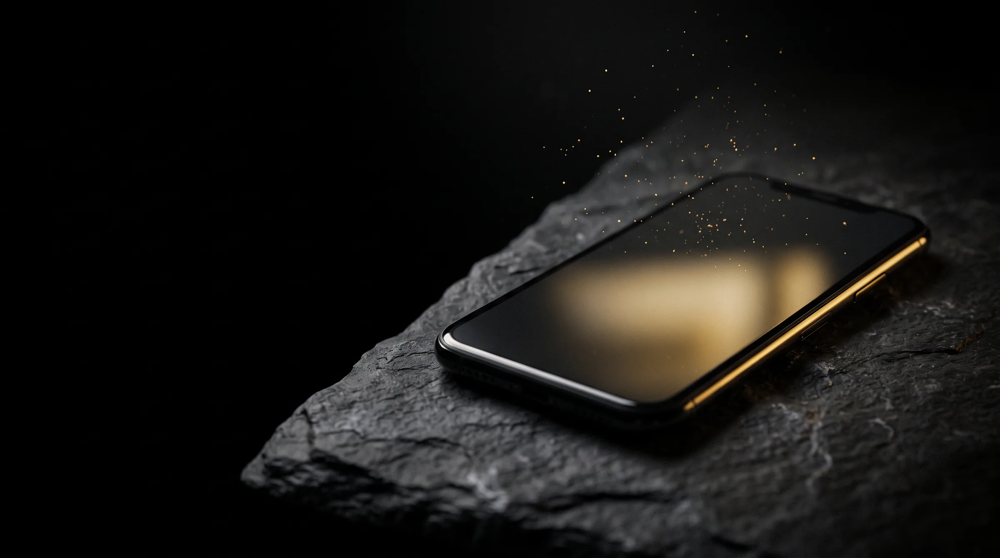
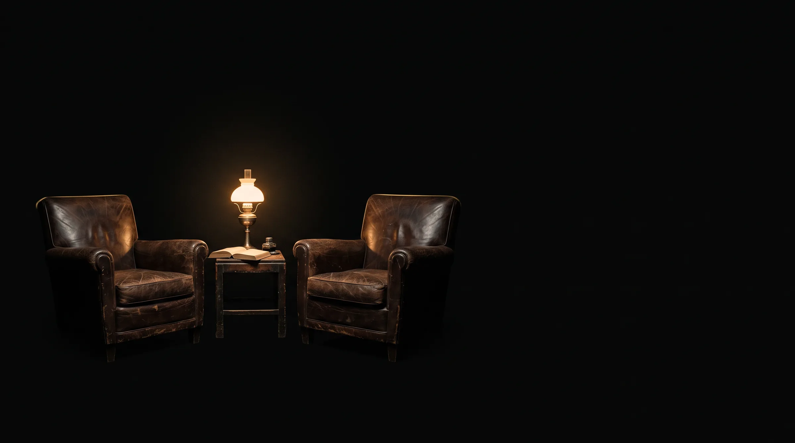
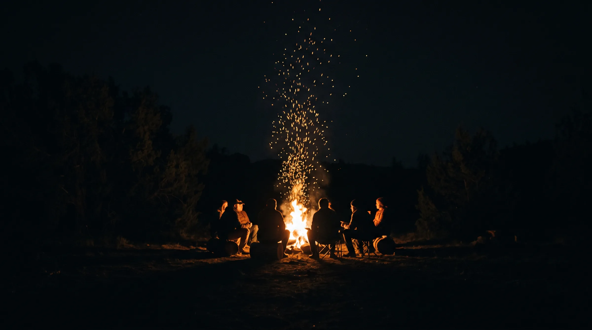
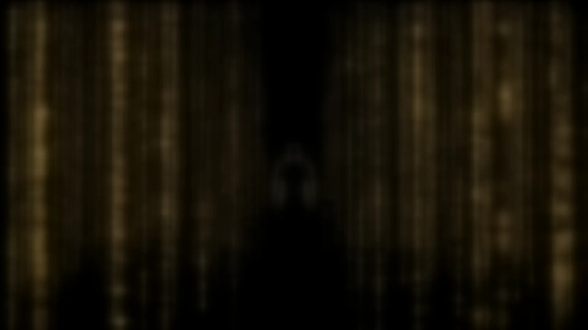

Consciência e o observador
Observar o que você pensa e sente sem se confundir com isso. Observar não é reprimir: é deixar de ser arrastado.

Gigantes da Nova EraPare de viver no piloto automático. Desenvolva sua consciência, compreenda os padrões que governam suas escolhas e aprenda a assumir o comando da própria vida.
Você sabe o que precisa fazer.
Mas consegue viver aquilo que sabe?
Ser Mestre de Si Mesmo é a única saída.

A GNE nasceu para reunir pessoas que decidiram parar de terceirizar a própria consciência. A liberdade começa quando você consegue observar seus pensamentos, questionar suas crenças e agir de acordo com aquilo que reconhece como importante.
Não queremos formar seguidores. Queremos formar pessoas livres, conscientes, responsáveis e capazes de pensar por si mesmas, sem depender de líderes ou gurus.

Antes de tentar governar sua realidade, aprenda a governar a si mesmo. A metodologia atravessa seis etapas, e cada uma se apoia na anterior.
Artigos, aulas abertas e estudos comentados sobre autoconhecimento, consciência, filosofia, pensamento crítico e prática. Gratuito e sem exigir fé.
Observar o que você pensa e sente sem se confundir com isso. Observar não é reprimir: é deixar de ser arrastado.
De onde vêm as crenças que você defende como se fossem suas, e o que acontece quando você começa a investigá-las.
Reconhecer o limite do próprio conhecimento é o que separa estudar de colecionar argumentos.
Consumir conteúdo dá sensação de movimento. A prática é lenta e desconfortável, e é ela que muda alguma coisa.

Meu nome é Rayfe Arruda, tenho 36 anos e vivo em Campinas. Sou pai do Otávio, do Pedro, da Flora e da Íris.
Aos 21 anos, me vi no ponto mais baixo da minha trajetória. Ao acordar no chão, encarando a morte de frente, a verdade me atingiu: eu ajudava a todos, mas não conseguia salvar a mim mesmo.
Aquela ruptura foi o divisor de águas. Mergulhei na metafísica, na neurociência e no comportamento humano, aplicando cada ferramenta primeiro na minha própria vida. Quando ela mudou, entendi que aquele conhecimento não podia parar em mim.
Rayfe ArrudaFundador da GNE · Paraquedista · 1º lugar no Palestrantes de Alto Impacto 2025

A metodologia Mestres de Si Mesmo em prática diária: estudo, exercício, observação e registro do próprio progresso, onde você estiver.
Planos e disponibilidade nas lojas serão publicados aqui assim que confirmados.
Quero saber do APP
Você sabe o que precisa fazer, mas ainda não vive aquilo que sabe. A mentoria trabalha esse intervalo com método, prática, revisão honesta e acompanhamento direto do Rayfe.
Depois da aplicação, a equipe entra em contato para uma conversa. Nem toda pessoa que aplica está no momento certo, e dizer isso também faz parte do trabalho.
Aplicar para a mentoria
Pessoas em momentos diferentes da vida, unidas pela decisão de conhecer a si mesmas e assumir responsabilidade pela própria evolução.
A comunidade não existe para dar respostas nem para substituir o seu trabalho individual. Existe para que o processo aconteça com companhia, troca honesta e o exemplo concreto de quem está praticando.
Quero fazer parteCada produto e cada data só aparecem aqui com preço, entrega e condições confirmados.
Quero ser avisado
Escolha o assunto para que a mensagem chegue à pessoa certa. Se preferir, chame no WhatsApp: (18) 99111-7337.